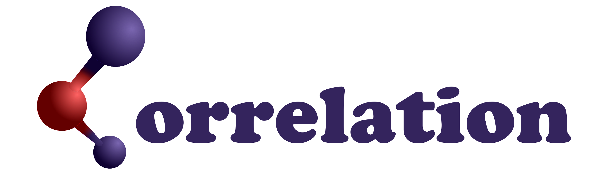

<tt>Correlation</tt>: An Analysis Tool for Liquids and for Amorphous Solids


Correlation is a high-performance, user-friendly tool for calculating and analyzing the structural properties of materials. It is designed for researchers working with atomistic simulations of liquids, amorphous solids, and crystalline structures.
The software computes key correlation functions from atomic coordinate files and exports the results in clean, ready-to-plot CSV files, making it easy to integrate into scientific workflows.
Table of Contents
Correlation: An Analysis Tool for Liquids and for Amorphous Solids
Key Features
Comprehensive Analysis: Calculates a full suite of standard correlation functions:
- Radial Distribution Function (J(r))
- Pair Distribution Function (g(r))
- Reduced Pair Distribution Function (G(r))
- Coordination Number (CN)
- Structure Factor (S(Q))
- X-Ray Diffraction (XRD)
- Plane-Angle Distribution (PAD)
- Dihedral-Angle Distribution (DAD)
- Ring Distribution (RD)
- Mean Squared Displacement (MSD)
- Steinhardt Bond-Orientational Parameters (Q4, Q6, W6)
- Velocity Autocorrelation Function (VACF)
- Vibrational Density of States (VDOS)
Supports structure files from:
- Crystallographic Information Files (
.CIF) - DMoL3 (
.CAR,.ARC) - CASTEP (
.CELL,.MD) - ONETEP (
.DAT) - LAMMPS (
.XYZ,.DUMP) - DMol3/Gaussian (
.OUTMOL)
High Performance: The core calculation loops are parallelized using modern C++ techniques, enabling the analysis of systems with hundreds of thousands of atoms.
Data Smoothing: Includes built-in kernel smoothing (Gaussian, Triweight) to clean up noisy data for better presentation and analysis.
Quick Start: Installation
Prerequisites
- A modern C++ compiler (C++23 support required)
- CMake (version 3.20+)
- git
- Intel TBB (for parallelization)
- Slint (for GUI)
Windows
- Install Visual Studio: Download and install Visual Studio with the "Desktop development with C++" workload. This includes the MSVC compiler and CMake.
- Install Rust: Download and install Rust from rust-lang.org.
- Install Git: Download and install Git from git-scm.com.
Linux (Debian/Ubuntu)
Linux (Arch/Manjaro)
MacOS
Build Instructions
Clone the repository:
Build the project:
Run tests:
(OPTIONAL) Install system-wide:
Usage
Correlation features an intuitive graphical user interface (GUI) to guide you through the analysis process. To start the application, run the executable:

1. Load a Structure File
Click the **"Load a structure file"** button in the Input File card. This opens a file dialog to select your material structure. Supported formats include .car, .cell, .dat, and .xyz.
2. File Information
Once a file is loaded, the File Info card displays the total atom count and the breakdown by element type.
3. Configure Analysis Options
Adjust the calculation parameters in the Options card:
- Radial Distribution: Set the maximum radius ($r_{max}$) and the bin width for Radial Distribution Functions.
- Structure Factor: Set the maximum scattering vector ($Q_{max}$), the S(Q) bin width, and the maximum integration radius for the FFT.
- Bond Angle: Set the bin widths for the Plane-Angle and Dihedral-Angle Distributions.
- Topological Rings: Set the maximum ring size to search for in the Ring Distribution analysis.
- Smoothing: Enable kernel smoothing and select the kernel type (Gaussian, Bump, or Triweight) and sigma value.
4. Bond Cutoffs
The Bond Cutoffs card allows you to review and manually adjust the distances used to define atomic bonds, which are used for coordination number, angle computations, and ring finding.
5. Run Analysis
Configure the final output and execution settings:
- Select Analyses: Check the boxes under the Options card for the specific analyses you wish to compute (e.g., Structural, Angular, Rings, Dynamic).
- Export Format: In the Run Analysis card, choose to export results as CSV, Parquet, or HDF5.
- Frame Selection: Specify the Start Frame and End Frame to analyze a specific subset of your trajectory.
- Run Analysis: Click the **"Run Analysis"** button to start the computations. Progress will be displayed in the bar below.
- Write Files: Once the analysis is complete, click **"Write Files"** to save the results to disk.
Built with
- emacs - An extensible, customizable, free/libre text editor — and more.
Authors
- Isaías Rodríguez - Corresponding Author - Isurwars isurw.nosp@m.ars@.nosp@m.gmail.nosp@m..com
- Salvador Villareal Lopez Rebuelta salva.nosp@m.dorv.nosp@m.illar.nosp@m.real.nosp@m.lr@gm.nosp@m.ail..nosp@m.com
- Renela M. Valladares renel.nosp@m.aval.nosp@m.ladar.nosp@m.es@g.nosp@m.mail..nosp@m.com
- Alexander Valladares valla.nosp@m.dar@.nosp@m.cienc.nosp@m.ias..nosp@m.unam..nosp@m.mx
- David Hinojosa-Romero david.nosp@m.18_h.nosp@m.r@cie.nosp@m.ncia.nosp@m.s.una.nosp@m.m.mx
- Ulises Santiago
- Ariel A. Valladares valla.nosp@m.dar@.nosp@m.unam..nosp@m.mx
License
This project is licensed under the MIT License - see the LICENSE file for details
Acknowledgments
I.R. acknowledge PAPIIT, DGAPA-UNAM for his postdoctoral fellowship. D.H.R. acknowledge Consejo Nacional de Ciencia y Tecnología (CONACyT) for supporting his graduate studies. A.A.V., R.M.V., and A.V. thank DGAPA-UNAM for continued financial support to carry out research projects under Grant No. IN104617, IN116520 and IIN118223. M. T. Vázquez and O. Jiménez provided the information requested. A. López and A. Pompa helped with the maintenance and support of the supercomputer in IIM-UNAM. Simulations were partially carried out in the Supercomputing Center of DGTIC-UNAM. I.R. would like to express his gratitude to F. B. Quiroga, M. A. Carrillo, R. S. Vilchis, S. Villareal and A. de Leon, for their time invested in testing the code, as well as the structures provided for benchmarks and tests.